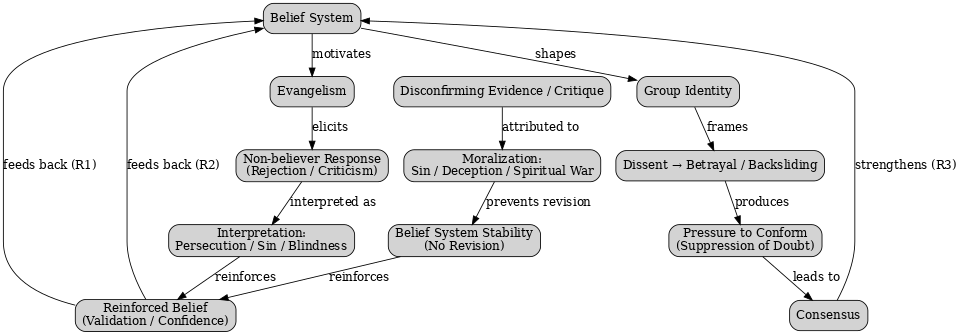
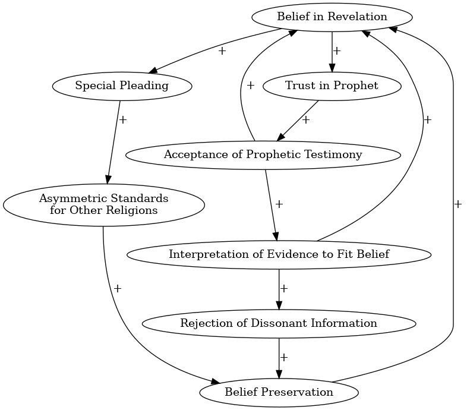
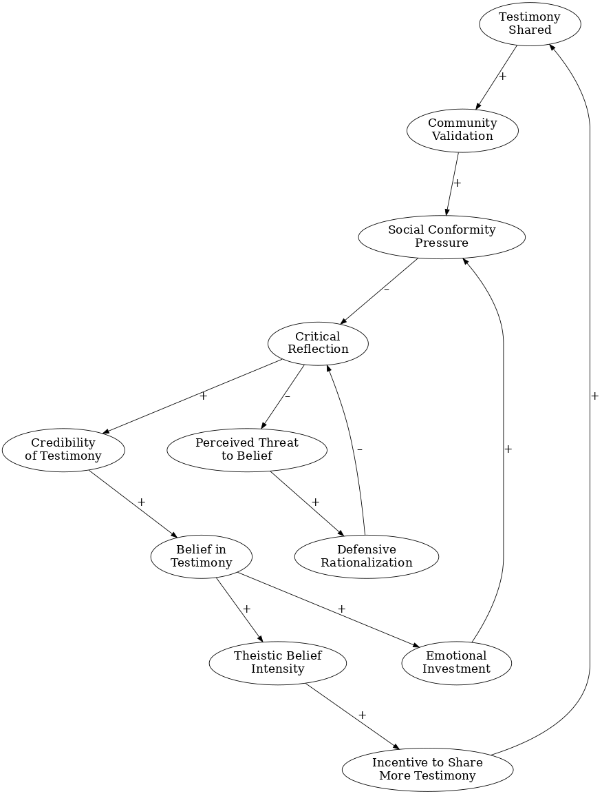

<title>Belief Preservation, Cognitive Inertia, and Self-Sealing Belief Systems</title>
<meta name="viewport" content="width=device-width, initial-scale=1" />
<style>
      /* Scoped styles for Blogger dark themes. No white table backgrounds. */
      .ep-post {
        color: inherit;
        background: transparent;
        font-family:
          system-ui,
          -apple-system,
          BlinkMacSystemFont,
          "Segoe UI",
          Roboto,
          Helvetica,
          Arial,
          sans-serif;
        line-height: 1.65;
        font-size: 1rem;
        max-width: 980px;
        margin: 0 auto;
      }

      .ep-post * {
        box-sizing: border-box;
      }

      
      .ep-post {
        box-sizing: border-box;
        width: min(100%, 980px);
        padding-left: 1rem;
        padding-right: 1rem;
        overflow-wrap: break-word;
      }

      .ep-post img,
      .ep-post video,
      .ep-post canvas,
      .ep-post svg {
        max-width: 100%;
        height: auto;
      }

      .ep-post figure {
        margin: 1.15em 0;
        max-width: 100%;
      }

      .ep-post .mermaid {
        max-width: 100%;
        overflow-x: auto;
      }

      .ep-post .mermaid svg {
        max-width: 100%;
        height: auto;
      }

.ep-post h1,
      .ep-post h2,
      .ep-post h3,
      .ep-post h4 {
        line-height: 1.25;
        margin: 1.8em 0 0.65em;
        color: inherit;
      }

      .ep-post h1 {
        font-size: 2rem;
        border-bottom: 1px solid
          color-mix(in srgb, currentColor 24%, transparent);
        padding-bottom: 0.35em;
      }

      .ep-post h2 {
        font-size: 1.45rem;
        border-bottom: 1px solid
          color-mix(in srgb, currentColor 16%, transparent);
        padding-bottom: 0.25em;
      }

      .ep-post h3 {
        font-size: 1.15rem;
      }

      .ep-post p {
        margin: 0.75em 0;
      }

      .ep-post ul,
      .ep-post ol {
        margin: 0.65em 0 0.9em 1.35em;
        padding: 0;
      }

      .ep-post li {
        margin: 0.22em 0;
      }

      .ep-post a {
        color: inherit;
        text-decoration: underline;
        text-underline-offset: 0.16em;
      }

      .ep-post strong {
        font-weight: 700;
      }

      .ep-post code {
        background: color-mix(in srgb, currentColor 10%, transparent);
        color: inherit;
        border: 1px solid color-mix(in srgb, currentColor 16%, transparent);
        border-radius: 0.25rem;
        padding: 0.08em 0.28em;
        font-family:
          ui-monospace, SFMono-Regular, Menlo, Consolas, "Liberation Mono",
          monospace;
        font-size: 0.92em;
      }

      .ep-post pre {
        background: color-mix(in srgb, currentColor 7%, transparent);
        color: inherit;
        border: 1px solid color-mix(in srgb, currentColor 18%, transparent);
        border-radius: 0.6rem;
        padding: 1rem;
        overflow-x: auto;
      }

      .ep-post pre code {
        background: transparent;
        border: 0;
        padding: 0;
      }

      .ep-post blockquote {
        margin: 1em 0;
        padding: 0.2em 0 0.2em 1em;
        border-left: 3px solid color-mix(in srgb, currentColor 32%, transparent);
        color: color-mix(in srgb, currentColor 88%, transparent);
      }

      /* =========================================================
   Readable Blogger tables
   ========================================================= */

      .ep-post .table-wrap {
        width: 100%;
        max-width: 100%;
        overflow-x: auto;
        overflow-y: hidden;
        -webkit-overflow-scrolling: touch;
        margin: 1.15em 0;
        border: 1px solid color-mix(in srgb, currentColor 16%, transparent);
        border-radius: 0.65rem;
        background: transparent !important;
      }

      .ep-post table {
        width: 100%;
        border-collapse: collapse;
        table-layout: fixed;
        margin: 1.15em 0;
        font-size: 0.9em;
        line-height: 1.45;
        color: inherit;
        background: transparent !important;
      }

      .ep-post .table-wrap table {
        margin: 0;
      }

      /* Wider tables can scroll, but text still wraps instead of becoming giant. */
      .ep-post table.wide-table {
        min-width: 760px;
      }

      .ep-post table.extra-wide-table {
        min-width: 920px;
      }

      /* Long tables should feel more like a reference sheet. */
      .ep-post table.long-table {
        font-size: 0.86em;
      }

      .ep-post thead,
      .ep-post tbody,
      .ep-post tr,
      .ep-post th,
      .ep-post td {
        background: transparent !important;
        color: inherit;
      }

      .ep-post th,
      .ep-post td {
        border: 1px solid color-mix(in srgb, currentColor 22%, transparent);
        padding: 0.48em 0.6em;
        vertical-align: top;
        white-space: normal;
        overflow-wrap: break-word;
        word-break: normal;
        hyphens: auto;
      }

      .ep-post th {
        font-weight: 700;
        text-align: left;
        background: color-mix(in srgb, currentColor 9%, transparent) !important;
      }

      .ep-post tr:nth-child(even) td {
        background: color-mix(in srgb, currentColor 4%, transparent) !important;
      }

      /* First columns are usually labels/terms. Keep them compact but readable. */
      .ep-post table:not(.extra-wide-table) th:first-child,
      .ep-post table:not(.extra-wide-table) td:first-child {
        width: 22%;
      }

      /* Two-column explanatory tables: give the explanation more room. */
      .ep-post table.two-col th:first-child,
      .ep-post table.two-col td:first-child {
        width: 28%;
      }

      .ep-post table.two-col th:nth-child(2),
      .ep-post table.two-col td:nth-child(2) {
        width: 72%;
      }

      /* Three-column reference tables. */
      .ep-post table.three-col th:first-child,
      .ep-post table.three-col td:first-child {
        width: 22%;
      }

      .ep-post table.three-col th:nth-child(2),
      .ep-post table.three-col td:nth-child(2) {
        width: 43%;
      }

      .ep-post table.three-col th:nth-child(3),
      .ep-post table.three-col td:nth-child(3) {
        width: 35%;
      }

      /* Keep short utility columns compact when manually applied. */
      .ep-post th.short,
      .ep-post td.short,
      .ep-post th.date,
      .ep-post td.date,
      .ep-post th.number,
      .ep-post td.number {
        width: 1%;
        white-space: nowrap;
      }

      /* Use on text-heavy columns when editing by hand later. */
      .ep-post th.long,
      .ep-post td.long,
      .ep-post th.description,
      .ep-post td.description,
      .ep-post th.notes,
      .ep-post td.notes {
        min-width: 14rem;
        line-height: 1.5;
        white-space: normal;
        overflow-wrap: break-word;
      }

      /* Dense option for especially long tables. */
      .ep-post table.dense th,
      .ep-post table.dense td {
        padding: 0.38em 0.5em;
        font-size: 0.96em;
        line-height: 1.42;
      }

      /* Math support */
      .ep-post .mjx-container {
        overflow-x: auto;
        overflow-y: hidden;
        max-width: 100%;
      }

      .ep-post .math-block {
        margin: 1em 0;
        overflow-x: auto;
      }

      @supports not (color: color-mix(in srgb, white 50%, black)) {
        .ep-post h1,
        .ep-post h2 {
          border-bottom-color: rgba(128, 128, 128, 0.35);
        }

        .ep-post th,
        .ep-post td {
          border-color: rgba(128, 128, 128, 0.35);
        }

        .ep-post th {
          background: rgba(128, 128, 128, 0.12) !important;
        }

        .ep-post tr:nth-child(even) td {
          background: rgba(128, 128, 128, 0.06) !important;
        }

        .ep-post code,
        .ep-post pre {
          background: rgba(128, 128, 128, 0.12);
          border-color: rgba(128, 128, 128, 0.25);
        }

        .ep-post .table-wrap {
          border-color: rgba(128, 128, 128, 0.25);
        }
      }

      /* Mobile: convert tables into readable cards instead of squeezed grids. */
      @media (max-width: 720px) {
        .ep-post {
          font-size: 0.98rem;
        }

        .ep-post h1 {
          font-size: 1.65rem;
        }

        .ep-post h2 {
          font-size: 1.28rem;
        }

        .ep-post .table-wrap {
          overflow-x: visible;
          border: 0;
          border-radius: 0;
          margin: 1.1em 0;
        }

        .ep-post table,
        .ep-post table.wide-table,
        .ep-post table.extra-wide-table,
        .ep-post table.long-table {
          display: block;
          width: 100%;
          min-width: 0;
          max-width: 100%;
          font-size: 0.92em;
          border: 0;
        }

        .ep-post thead {
          display: none;
        }

        .ep-post tbody,
        .ep-post tr,
        .ep-post td {
          display: block;
          width: 100% !important;
        }

        .ep-post tr {
          margin: 0 0 0.9em;
          border: 1px solid color-mix(in srgb, currentColor 20%, transparent);
          border-radius: 0.65rem;
          overflow: hidden;
          background: color-mix(
            in srgb,
            currentColor 3%,
            transparent
          ) !important;
        }

        .ep-post td {
          border: 0;
          border-bottom: 1px solid
            color-mix(in srgb, currentColor 14%, transparent);
          padding: 0.55em 0.7em;
          line-height: 1.5;
        }

        .ep-post td:last-child {
          border-bottom: 0;
        }

        .ep-post td::before {
          content: attr(data-label);
          display: block;
          margin-bottom: 0.18em;
          font-size: 0.78em;
          line-height: 1.25;
          font-weight: 700;
          letter-spacing: 0.02em;
          text-transform: uppercase;
          color: color-mix(in srgb, currentColor 72%, transparent);
        }
      }
    

      /* Phase 2 structural hierarchy */
      .ep-post .ep-part-banner {
        margin: 3.2em 0 1.1em;
        padding: 0.9em 1em;
        border-top: 2px solid color-mix(in srgb, currentColor 34%, transparent);
        border-bottom: 1px solid color-mix(in srgb, currentColor 18%, transparent);
        background: color-mix(in srgb, currentColor 4%, transparent);
      }
      .ep-post .ep-part-banner .ep-part-kicker {
        display: block;
        font-size: 0.78em;
        font-weight: 700;
        letter-spacing: 0.08em;
        text-transform: uppercase;
        opacity: 0.72;
        margin-bottom: 0.18em;
      }
      .ep-post .ep-part-banner .ep-part-title {
        display: block;
        margin: 0.08em 0 0.24em;
        padding: 0;
        border: 0;
        font-size: 1.72rem;
        line-height: 1.2;
        font-weight: 750;
      }
      .ep-post h2.ep-source-section {
        margin-top: 2.2em;
        padding-top: 0.35em;
        border-top: 1px solid color-mix(in srgb, currentColor 14%, transparent);
      }
      .ep-post .ep-toc {
        margin: 0.8em 0 2.2em;
      }
      .ep-post .ep-toc-part {
        margin: 1.15em 0;
      }
      .ep-post .ep-toc-part > p {
        margin-bottom: 0.25em;
        font-weight: 700;
      }
      .ep-post .ep-toc-part ul ul {
        margin-top: 0.25em;
        margin-bottom: 0.4em;
      }


      /* =========================================================
         Phase 4: editorial presentation system
         ========================================================= */
      .ep-post .chapter-lead {
        font-size: 1.04em;
        line-height: 1.68;
        margin: 0.9em 0 1.2em;
      }

      .ep-post .concept-callout,
      .ep-post .formula-callout,
      .ep-post .core-claim {
        margin: 1.05em 0;
        padding: 0.78em 0.95em;
        border-left: 4px solid color-mix(in srgb, currentColor 34%, transparent);
        background: color-mix(in srgb, currentColor 5%, transparent);
        border-radius: 0.35rem;
      }

      .ep-post .formula-callout {
        text-align: center;
        font-weight: 650;
        letter-spacing: 0.01em;
      }

      .ep-post ul.compact-grid,
      .ep-post ul.question-grid {
        list-style-position: outside;
        display: grid;
        grid-template-columns: repeat(2, minmax(0, 1fr));
        gap: 0.28em 1.6em;
        margin: 0.8em 0 1.05em 1.25em;
      }

      .ep-post ul.compact-grid li,
      .ep-post ul.question-grid li {
        break-inside: avoid;
        padding-right: 0.4em;
      }

      .ep-post .checkpoint-block,
      .ep-post .learning-insight-block {
        margin: 1.6em 0;
        padding: 0.35em 1em 0.85em;
        border: 1px solid color-mix(in srgb, currentColor 18%, transparent);
        border-radius: 0.7rem;
        background: color-mix(in srgb, currentColor 3%, transparent);
      }

      .ep-post .checkpoint-block > h2,
      .ep-post .checkpoint-block > h3,
      .ep-post .learning-insight-block > h3 {
        margin-top: 0.65em;
      }

      .ep-post table.comparison-table th:first-child,
      .ep-post table.comparison-table td:first-child {
        width: 32%;
      }

      .ep-post table.worksheet-table th:first-child,
      .ep-post table.worksheet-table td:first-child {
        width: 24%;
      }

      .ep-post table.glossary-table th:first-child,
      .ep-post table.glossary-table td:first-child {
        width: 18%;
      }

      .ep-post table.lens-table th:first-child,
      .ep-post table.lens-table td:first-child {
        width: 24%;
      }

      @media (max-width: 720px) {
        .ep-post ul.compact-grid,
        .ep-post ul.question-grid {
          grid-template-columns: 1fr;
          gap: 0.2em;
        }

        .ep-post .concept-callout,
        .ep-post .formula-callout,
        .ep-post .core-claim {
          padding: 0.7em 0.8em;
        }
      }


      /* =========================================================
         Phase 6: section-level coherence and navigation
         ========================================================= */
      .ep-post .chapter-guide {
        margin: 0.8em 0 1.25em;
        padding: 0.72em 0.9em;
        border: 1px solid color-mix(in srgb, currentColor 16%, transparent);
        border-radius: 0.55rem;
        background: color-mix(in srgb, currentColor 2.5%, transparent);
      }
      .ep-post .chapter-guide p {
        margin: 0.18em 0;
      }
      .ep-post .chapter-guide .chapter-path {
        font-size: 0.94em;
        opacity: 0.88;
      }
      .ep-post .chapter-transition {
        margin: 1.45em 0 0.4em;
        padding-top: 0.85em;
        border-top: 1px solid color-mix(in srgb, currentColor 16%, transparent);
        font-style: italic;
      }
      .ep-post .ep-part-banner .ep-part-summary {
        display: block;
        margin-top: 0.42em;
        max-width: 72rem;
        font-size: 0.92em;
        line-height: 1.5;
        font-weight: 400;
        opacity: 0.82;
      }

      .ep-post header.ep-part-banner {
        clear: both;
        position: relative;
      }
      .ep-post .checkpoint-block + header.ep-part-banner {
        margin-top: 3.8em;
      }
</style>
<script>
      window.MathJax = {
        tex: {
          inlineMath: [
            ["\\(", "\\)"],
            ["$", "$"],
          ],
          displayMath: [
            ["\\[", "\\]"],
            ["$$", "$$"],
          ],
          processEscapes: true,
        },
        options: {
          skipHtmlTags: [
            "script",
            "noscript",
            "style",
            "textarea",
            "pre",
            "code",
          ],
        },
      };
    </script>
<script async="" src="https://cdn.jsdelivr.net/npm/mathjax@3/es5/tex-chtml.js"></script>
<article class="ep-post">
  <h1>
    Belief Preservation, Cognitive Inertia, and Self-Sealing Belief Systems
  </h1>
  <p>
    I've been thinking about why some beliefs are unresponsive to evidence. Why
    is it that certain systems of thought resist change? This falls within the
    broader category of inquiry concerning
    <a href="https://en.wikipedia.org/wiki/Belief_perseverance">
      belief preservation
    </a>
    and
    <a href="https://en.wikipedia.org/wiki/Cognitive_inertia">
      cognitive inertia
    </a>
    ; the idea that beliefs are strengthened during attempts to present evidence
    debunking them. I'm interested in understanding the mechanisms that preserve
    belief. It seems like a
    <a href="https://en.wikipedia.org/wiki/System_dynamics">
      system dynamics
    </a>
    approach (especially
    <a href="https://en.wikipedia.org/wiki/Causal_loop_diagram">
      Causal Loop Diagrams
    </a>
    ) is useful for identifying reinforcing and balancing feedback loops in our
    cognitive system and institutionalized behaviors that contribute to this
    preservation. What interests me is that some belief systems make their
    stabilizing mechanisms visible. If we attend to how criticism, doubt,
    testimony, and disagreement are processed, recurring patterns begin to
    emerge. I want to examine several of those patterns and ask what they reveal
    about the architecture of belief preservation.
  </p>
  <p>
    <strong> Thesis and roadmap. </strong>
    My argument is not that every evangelical reasons in the same way, or that
    these mechanisms are unique to Christianity. The narrower claim is
    structural: a belief system becomes increasingly self-sealing when
    potentially disconfirming inputs are repeatedly reinterpreted in ways that
    protect the central belief. I will examine three mechanisms:
    <strong>
      (1) rejection becoming confirmation, (2) revelation and prophecy being
      validated through internally dependent standards, and (3) protected
      testimony becoming socially reinforced evidence.
    </strong>
    I will then consider objections, limits, and what would count against this
    model.
  </p>
  <nav aria-label="Table of contents" class="toc">
    <div class="toc-title">Table of Contents</div>
    <ol>
      <li>
        <a href="#1-framework-belief-preservation-as-a-feedback-problem"
          >Framework: Belief Preservation as a Feedback Problem</a
        >
      </li>
      <li>
        <a href="#2-mechanism-one-when-rejection-becomes-confirmation"
          >Mechanism One: When Rejection Becomes Confirmation</a
        >
        <ol class="toc-sub">
          <li>
            <a href="#the-evangelistic-encounter">The Evangelistic Encounter</a>
          </li>
          <li>
            <a href="#epistemic-asymmetry-interlocutor-or-missionary"
              >Epistemic Asymmetry: Interlocutor or Missionary?</a
            >
          </li>
          <li>
            <a href="#a-taxonomy-of-the-self-protective-mechanisms"
              >A Taxonomy of the Self-Protective Mechanisms</a
            >
          </li>
          <li>
            <a href="#systems-view-of-the-first-mechanism"
              >Systems View of the First Mechanism</a
            >
          </li>
        </ol>
      </li>
      <li>
        <a
          href="#3-mechanism-two-prophecy-revelation-and-internally-dependent-standards"
          >Mechanism Two: Prophecy, Revelation, and Internally Dependent
          Standards</a
        >
        <ol class="toc-sub">
          <li>
            <a href="#prediction-prophecy-and-the-problem-of-retrospective-fit"
              >Prediction, Prophecy, and the Problem of Retrospective Fit</a
            >
          </li>
          <li>
            <a href="#what-would-count-as-a-successful-prophetic-prediction"
              >What Would Count as a Successful Prophetic Prediction?</a
            >
          </li>
          <li>
            <a href="#failure-cases-cherry-picking-and-asymmetric-standards"
              >Failure Cases, Cherry-Picking, and Asymmetric Standards</a
            >
          </li>
          <li>
            <a href="#from-prophecy-to-the-circularity-of-revelation"
              >From Prophecy to the Circularity of Revelation</a
            >
          </li>
          <li>
            <a href="#revelation-as-testimony">Revelation as Testimony</a>
          </li>
          <li>
            <a href="#revelation-as-a-reinforcing-system"
              >Revelation as a Reinforcing System</a
            >
          </li>
        </ol>
      </li>
      <li>
        <a
          href="#4-mechanism-three-protected-testimony-as-socially-reinforced-evidence"
          >Mechanism Three: Protected Testimony as Socially Reinforced
          Evidence</a
        >
        <ol class="toc-sub">
          <li>
            <a href="#how-testimony-reinforces-an-echo-chamber"
              >How Testimony Reinforces an Echo Chamber</a
            >
          </li>
          <li>
            <a href="#testimony-as-an-epistemic-shield"
              >Testimony as an Epistemic Shield</a
            >
          </li>
          <li>
            <a href="#the-epistemology-of-testimony-revisited"
              >The Epistemology of Testimony Revisited</a
            >
          </li>
          <li>
            <a href="#boundary-maintenance-and-missing-balancing-feedback"
              >Boundary Maintenance and Missing Balancing Feedback</a
            >
          </li>
          <li>
            <a href="#testimony-feedback-loops">Testimony Feedback Loops</a>
          </li>
        </ol>
      </li>
      <li>
        <a href="#5-objections-scope-and-what-would-count-against-the-model"
          >Objections, Scope, and What Would Count Against the Model</a
        >
        <ol class="toc-sub">
          <li>
            <a href="#the-symmetry-test-what-would-change-my-mind"
              >The Symmetry Test: What Would Change My Mind?</a
            >
          </li>
        </ol>
      </li>
      <li>
        <a href="#6-synthesis-a-general-model-of-cognitive-inertia"
          >Synthesis: A General Model of Cognitive Inertia</a
        >
      </li>
    </ol>
  </nav>
  <div class="table-wrap">
    <table class="three-col">
      <thead>
        <tr>
          <th>Mechanism</th>
          <th>Typical interpretive move</th>
          <th>Effect on belief revision</th>
        </tr>
      </thead>
      <tbody>
        <tr>
          <td data-label="Mechanism">Rejection becomes confirmation</td>
          <td data-label="Typical interpretive move">
            Opposition is read as predicted hostility, spiritual blindness, or
            persecution.
          </td>
          <td data-label="Effect on belief revision">
            Potential correction is converted into confirming evidence.
          </td>
        </tr>
        <tr>
          <td data-label="Mechanism">Revelation validates revelation</td>
          <td data-label="Typical interpretive move">
            The authority used to identify genuine revelation is itself derived
            from revelation.
          </td>
          <td data-label="Effect on belief revision">
            External criteria become difficult to introduce without being
            subordinated to the system.
          </td>
        </tr>
        <tr>
          <td data-label="Mechanism">Protected testimony reinforces belief</td>
          <td data-label="Typical interpretive move">
            Personal experience is treated as sincere, sacred, and socially
            costly to challenge.
          </td>
          <td data-label="Effect on belief revision">
            Defeaters receive less scrutiny while affirming narratives circulate
            and accumulate.
          </td>
        </tr>
      </tbody>
    </table>
  </div>
  <h2 id="1-framework-belief-preservation-as-a-feedback-problem">
    1. Framework: Belief Preservation as a Feedback Problem
  </h2>
  <div>
    Belief preservation refers to the tendency people have to preserve core
    beliefs even in the face of disconfirming evidence. This is often driven by
    cognitive dissonance avoidance, confirmation bias, motivated reasoning, and
    identity-protective cognition. Similarly, cognitive inertia refers to the
    tendency of belief systems (especially worldviews) to remain stable over
    time due to complex interlocking structures of ideas, high switching costs,
    sociocultural reinforcement, and emotional investment. Beliefs are not just
    isolated nodes, but are parts of a broader interdependent system that
    naturally resists perturbation. You can consider these to be the core
    enabling factors.
  </div>
  <p>
    For clarity, I will use
    <strong> disconfirming input </strong>
    for criticism, contrary evidence, failed expectations, or other information
    that might rationally motivate revision. I will reserve the system-dynamics
    terms
    <strong> reinforcing loop </strong>
    and
    <strong> balancing loop </strong>
    for causal structure. A reinforcing loop amplifies or preserves a state; a
    balancing loop counteracts deviation and can enable correction. This
    distinction matters because “negative feedback” in ordinary speech can mean
    criticism, whereas in system dynamics it has a more technical meaning.
  </p>
  <div class="table-wrap">
    <table class="two-col">
      <thead>
        <tr>
          <th>Concept</th>
          <th>Role in the model</th>
        </tr>
      </thead>
      <tbody>
        <tr>
          <td data-label="Concept">Self-sealing epistemology</td>
          <td data-label="Role in the model">
            The general condition in which the rules for interpreting evidence
            systematically protect central commitments from revision.
          </td>
        </tr>
        <tr>
          <td data-label="Concept">Belief preservation</td>
          <td data-label="Role in the model">
            The outcome: a core belief persists despite disconfirming input.
          </td>
        </tr>
        <tr>
          <td data-label="Concept">Cognitive inertia</td>
          <td data-label="Role in the model">
            Persistence over time produced by interlocking intellectual,
            emotional, social, and institutional commitments.
          </td>
        </tr>
        <tr>
          <td data-label="Concept">Reinforcing loop</td>
          <td data-label="Role in the model">
            A causal process that increases or maintains the existing belief
            state.
          </td>
        </tr>
        <tr>
          <td data-label="Concept">Balancing loop</td>
          <td data-label="Role in the model">
            A corrective process capable of reducing confidence, modifying
            interpretation, or revising the belief.
          </td>
        </tr>
        <tr>
          <td data-label="Concept">Epistemic firewall</td>
          <td data-label="Role in the model">
            A boundary mechanism that discounts, moralizes, or reclassifies
            external information before it can function as a defeater.
          </td>
        </tr>
      </tbody>
    </table>
  </div>
  <p>
    The practical diagnostic question running through the essay is therefore
    simple:
    <strong>
      What happens to information that could count against the belief?
    </strong>
    In an epistemically open system, at least some inputs can lower confidence
    or motivate revision. In a self-sealing system, supporting evidence
    increases confidence while contrary evidence is repeatedly metabolized into
    another reason to preserve the belief.
  </p>
  <div class="table-wrap">
    <table class="three-col wide-table">
      <thead>
        <tr>
          <th>Incoming information</th>
          <th>Epistemically open response</th>
          <th>Self-sealing response</th>
        </tr>
      </thead>
      <tbody>
        <tr>
          <td data-label="Incoming information">Supporting evidence</td>
          <td data-label="Epistemically open response">
            Confidence may increase.
          </td>
          <td data-label="Self-sealing response">Confidence increases.</td>
        </tr>
        <tr>
          <td data-label="Incoming information">Contrary evidence</td>
          <td data-label="Epistemically open response">
            Confidence may decrease or the model may be revised.
          </td>
          <td data-label="Self-sealing response">
            The evidence is reinterpreted, discounted, or explained away.
          </td>
        </tr>
        <tr>
          <td data-label="Incoming information">Uncertainty or doubt</td>
          <td data-label="Epistemically open response">
            Prompts investigation and comparison of alternatives.
          </td>
          <td data-label="Self-sealing response">
            Can be reframed as weakness, temptation, ignorance, or lack of
            commitment.
          </td>
        </tr>
        <tr>
          <td data-label="Incoming information">Criticism from outsiders</td>
          <td data-label="Epistemically open response">
            May expose a mistake or missing perspective.
          </td>
          <td data-label="Self-sealing response">
            Can be treated as hostility, persecution, corruption, or evidence of
            outsider unreliability.
          </td>
        </tr>
        <tr>
          <td data-label="Incoming information">Failed expectation</td>
          <td data-label="Epistemically open response">
            Creates pressure to revise the prediction or theory.
          </td>
          <td data-label="Self-sealing response">
            Generates an auxiliary explanation that preserves the core
            commitment.
          </td>
        </tr>
      </tbody>
    </table>
  </div>
  <h2 id="2-mechanism-one-when-rejection-becomes-confirmation">
    2. Mechanism One: When Rejection Becomes Confirmation
  </h2>
  <h3 id="the-evangelistic-encounter">The Evangelistic Encounter</h3>
  <p>
    Recently, while attending an evangelical Protestant church, I heard a sermon
    on 1 Peter 2:9, which describes believers as a “royal priesthood.” This
    connects to the Protestant idea of the “priesthood of all believers”: every
    Christian has direct access to God and a responsibility to represent or
    proclaim God in the world. Most of the sermon’s details are not important
    for my argument. The relevant point is the instruction to live and speak
    one’s faith in a way that reflects God’s grace and goodness. I do not think
    that summary is controversial or far from ordinary evangelical readings of
    the passage.
  </p>
  <p>
    I think this interpretation helps explain one route by which evangelistic
    dogmatism can emerge, especially when someone does not want to be preached
    to. In the sermon, the pastor emphasized that an evangelizer should not
    “stoop to their level” when the message is rejected. The implied
    interpretive pattern is that hostile or critical responses reflect the other
    person’s lack of grace or ungodliness rather than a possible problem with
    the evangelizer’s message or approach. Within that structure, the
    evangelizer’s reading can become functionally non-defeasible: criticism is
    classified in advance in a way that protects the belief from correction.
    Combine this with passages predicting that believers will be hated or
    rejected, and a self-reinforcing loop becomes possible:
    <strong>
      engage a nonbeliever → encounter rejection → interpret rejection as the
      predicted rejection of God → strengthen the original belief.
    </strong>
    In other words, the interpretive system can become closed in the specific
    sense that both acceptance and rejection feed the same conclusion. I do not
    think this dynamic is unique to Christianity; Christianity is simply a
    particularly visible case through which to examine it.
  </p>
  <ol style="text-align: left">
    <li>
      "I'm called to witness" → rooted in verses like 1 Peter 2:9, the Great
      Commission (Matt. 28:19), etc.
    </li>
    <li>
      "They rejected my message" → interpreted not as disagreement, but as
      spiritual blindness or hostility to God.
    </li>
    <li>
      "Jesus said this would happen" → e.g., "You will be hated by all for my
      name’s sake" (Matthew 10:22).
    </li>
    <li>
      "I must be doing something right" → rejection = confirmation, not
      correction.
    </li>
    <li>
      "Keep going, undeterred" → because stopping would imply lack of faith or
      courage.
    </li>
  </ol>
  <div>
    In this framework, evangelism is understood as extending God’s grace to
    others. If someone resists, the resistance can be framed not merely as a
    personal choice or boundary but as resistance to grace itself, which easily
    acquires a moral dimension. The evangelizer can therefore conclude, “I am
    justified because I am being faithful.” This often interacts with
    expectations of persecution drawn from passages such as John 15:18 (“If the
    world hates you, know that it has hated me before it hated you”) and 2
    Timothy 3:12 (“All who desire to live a godly life … will be persecuted”).
    Those passages can become a default lens through which pushback is
    interpreted. A request to stop, a hostile response, or criticism may then be
    assimilated to persecution. Some evangelical subcultures reinforce this by
    celebrating rejection as a badge of faith, emphasizing countercultural
    identity, or warning against adapting doctrine merely to “tickle ears.” The
    result is that external feedback is filtered through the ideology rather
    than automatically functioning as a reason for reconsideration. In the
    strongest forms of this dynamic, admitting error can feel like betraying
    God, undermining scripture, or compromising the gospel.
  </div>
  <h3 id="epistemic-asymmetry-interlocutor-or-missionary">
    Epistemic Asymmetry: Interlocutor or Missionary?
  </h3>
  <div>
    From an agnostic perspective, this form of evangelizing can create a strong
    epistemic asymmetry. I subscribe to fallibilism and the defeasibility of
    knowledge: most claims can be subjected to scrutiny and may remain radically
    uncertain. By contrast, the evangelizer can occupy a position of exceptional
    certainty about personal experience, interpretation, and the nondemonstrable
    God in whom they have faith. When I push back from this different starting
    point, the disagreement may not be received as nuance, criticism, or genuine
    investigation. It can instead be interpreted as a symptom of “spiritual
    blindness” or spiritual deficiency. I am then not primarily treated as
    someone whose objections might bear on the truth of the claim, but as
    someone to save. There is a fundamental asymmetry between the interlocutors'
    goals. My disagreement is interpreted from within the system not merely as
    intellectual dissent but as rebellion, subversion, or opposition. Scriptural
    interpretations can thereby pre-empt critical scrutiny in a manner similar
    to echo chambers that teach the in-group to distrust evidence originating
    outside the system.
  </div>
  <div>
    <div>
      As an agnostic, I am operating from a position of fallibilism. My beliefs
      are provisional, subject to revision upon better evidence or argument. In
      contrast, many evangelicals operate from a framework of epistemic
      certainty via divine revelation; "This is true because God has revealed
      it, and God cannot be wrong." Even before any argument begins, the two of
      us are working with opposing rules for belief revision. If I say "Show me
      a better reason and I'll change", they might say "No reason could change
      this eternal truth." This is not a conversation between two equal agents
      pursuing truth; it’s a conversation between a truth-possessor and a
      truth-lacker; from their point of view. Because of this, rebuttal is read
      as rebellion, not reasoning. The disagreement is often not understood
      epistemically, but morally or spiritually. Consider these two verses:
    </div>
    <div>
      <ul style="text-align: left">
        <li>
          “The natural man does not accept the things of the Spirit of God, for
          they are folly to him...” —1 Corinthians 2:14
        </li>
        <li>
          “People loved darkness rather than light because their deeds were
          evil.” —John 3:19
        </li>
      </ul>
    </div>
    <div>
      When I say "I am not convinced, here are my concerns..." they might
      literally register that as "I am resisting God because I love sin or
      pride." The good-faith inquiry gets reinterpreted as bad faith rebellion,
      and that instantly shuts down mutual exchange. I come to the conversation
      as an interlocutor, seeking clarity, truth, maybe even to expose
      inconsistency. They come to it as a missionary; not to discover truth, but
      to deliver it. So if I say "let's explore competing worldviews and examine
      their explanatory merit" they might think "He is lost and needs to be
      saved, God sent me to tell him how." I am trying to understand, they are
      trying to convert. I am not a peer in a conversation, I am their project.
      Many belief systems—religious or otherwise—build in immunizing strategies
      to protect against disconfirmation. In this case:
    </div>
    <div>
      <div>
        <ul style="text-align: left">
          <li>
            “If someone rejects the gospel, that’s what the Bible said would
            happen.”
          </li>
          <li>“Their heart is hard; their eyes are blind.”</li>
          <li>“They’re convicted by the truth and lashing out.”</li>
        </ul>
      </div>
    </div>
  </div>
  <div>
    This means every rejection is expected, even desirable; it validates
    prophecy, reinforces group solidarity, and eliminates the need for
    self-scrutiny. Structurally, this resembles self-sealing forms of
    conspiratorial reasoning: contrary responses can be absorbed as evidence for
    the very framework under dispute.
  </div>
  <div>
    Even when the disagreement is acknowledged as intellectual, the same
    framework can reappear at a deeper level. Why does the nonbeliever fail to
    recognize what the believer regards as the obvious metaphysical foundations
    of the Christian worldview? One answer is sin: its effects are said to run
    so deeply that they impair the nonbeliever’s reasoning capacities. The
    disagreement is therefore still moralized, only now at the level of
    cognition. A second problem follows when rejection is predicted by a theory
    that contains no clear disconfirming condition. If Christian theism predicts
    resistance from nonbelievers because of sin or moral failure, then criticism
    can count as confirmation; yet there may be no possible response that counts
    against the explanation. In that case, the theory is not merely making a
    risky prediction. It is equipped with auxiliary explanations that absorb
    apparent failure. Intellectual disagreement can be attributed to sin, and
    broader cultural criticism can be attributed to a “liberal secular” culture
    of sin. The feedback loop is therefore preserved by ad hoc explanations
    built into the interpretive environment.
  </div>
  <div>
    I am trying to offer a robust diagnosis of a cognitive architecture that can
    prevent disconfirmation and explain contradiction in advance. In much
    evangelical theology, especially within Reformed or Presuppositionalist
    frameworks, sin is not only a moral issue but an epistemic one. On this
    view, sin does not merely make someone act wrongly; it can make someone
    reason wrongly. If a person questions the coherence of divine justice, the
    historical reliability of scripture, or the metaphysical attributes of God,
    the response may be: “Your reasoning is corrupted by sin; if you were
    spiritually renewed, you would see clearly.” Philosophically, this resembles
    an epistemic externalist model in which the alleged defect lies not in the
    internal logic of the objection but in a damaged noetic structure. From my
    epistemic position, this is a form of
    <strong> epistemic pathologization </strong>
    : the disagreement is treated not primarily as rational dissent but as
    evidence of a defective spiritual condition. The difficulty is that
    disputing that diagnosis can itself be interpreted as further evidence of
    the diagnosis. Earlier I described the system as immune to counterevidence,
    self-reinforcing, and interpretively closed. Religion need not be
    falsifiable in the scientific sense; the problem is narrower. It arises when
    a worldview allows no meaningful form of disconfirming input—intellectual or
    existential—to function as a defeater. Such a system can explain everything
    while learning very little, because disagreement is pathologized before the
    criticism can be taken seriously on its own terms.
  </div>
  <h3 id="a-taxonomy-of-the-self-protective-mechanisms">
    A Taxonomy of the Self-Protective Mechanisms
  </h3>
  <div class="table-wrap">
    <table class="two-col">
      <thead>
        <tr>
          <th>Feature</th>
          <th>Effect</th>
        </tr>
      </thead>
      <tbody>
        <tr>
          <td data-label="Feature">
            <strong> Preloaded rejection anticipation </strong>
          </td>
          <td data-label="Effect">Shields against doubt</td>
        </tr>
        <tr>
          <td data-label="Feature">
            <strong> Epistemic moralization </strong>
          </td>
          <td data-label="Effect">Converts disagreement into sin</td>
        </tr>
        <tr>
          <td data-label="Feature">
            <strong> Unfalsifiable premises </strong>
          </td>
          <td data-label="Effect">Removes vulnerability</td>
        </tr>
        <tr>
          <td data-label="Feature">
            <strong> Ad hoc rescue devices </strong>
          </td>
          <td data-label="Effect">Explains away anomalies</td>
        </tr>
        <tr>
          <td data-label="Feature">
            <strong> Asymmetric role casting </strong>
          </td>
          <td data-label="Effect">Converts interlocutors into targets</td>
        </tr>
        <tr>
          <td data-label="Feature">
            <strong> Theological certainty </strong>
          </td>
          <td data-label="Effect">Removes the possibility of being wrong</td>
        </tr>
      </tbody>
    </table>
  </div>
  <h3 id="systems-view-of-the-first-mechanism">
    Systems View of the First Mechanism
  </h3>
  <div>
    Applied to the first case, a systems-thinking approach yields three
    reinforcing loops that help explain dogmatic belief persistence:
  </div>
  <div>
    <div>Loop A: Resistance = Proof of Truth</div>
    <div>
      <ul style="text-align: left">
        <li>Belief in the gospel ⟶ motivates evangelism</li>
        <li>Evangelism ⟶ elicits rejection from outsiders</li>
        <li>Rejection ⟶ interpreted as spiritual blindness or persecution</li>
        <li>Persecution ⟶ reinforces belief in the gospel (as predicted)</li>
        <li>Reinforced belief ⟶ motivates more evangelism</li>
      </ul>
    </div>
  </div>
  <div>
    <div>
      Loop B: Ad Hoc Defense of Belief. This is a reinforcing loop
      (R2). Critique → Moralization → Reinterpretation → Stability → Confidence
    </div>
    <div>
      <ul style="text-align: left">
        <li>Disconfirming evidence or critique arises</li>
        <li>Critique ⟶ attributed to sin / deception / spiritual war</li>
        <li>Interpretation as spiritual failure ⟶ prevents belief revision</li>
        <li>No revision ⟶ belief system remains intact</li>
        <li>Continued stability ⟶ confidence in belief increases</li>
      </ul>
    </div>
  </div>
  <div>
    <div>
      Loop C: Group Identity and Echo Reinforcement. Reinforcing loop (R3):
      Belief → Identity → Suppression → Consensus → Belief
    </div>
    <div>
      <ul style="text-align: left">
        <li>Belief system ⟶ ties closely to community identity</li>
        <li>Dissent ⟶ seen as betrayal / backsliding</li>
        <li>Pressure to conform ⟶ silences doubt</li>
        <li>Conformity ⟶ reinforces perceived consensus</li>
        <li>Consensus ⟶ strengthens group belief</li>
      </ul>
    </div>
  </div>
  <div>
    <div>
      In open systems, you'd expect balancing loops, feedback that triggers
      self-correction or belief adjustment. But in dogmatic systems, doubt is
      stigmatized, dissent is penalized, and feedback channels are blocked. From
      a systems perspective, we can see the belief system has a built-in
      homeostasis against change, external pressures amplify internal
      justification, and attempts at reform or critique are absorbed and
      neutralized as further evidence of the system's correctness.  This
      explains why even well-reasoned, good-faith criticism often has no
      meaningful effect on the belief structure; it's metabolized as fuel, not
      threat. Here is a visual:
    </div>
  </div>
  <div>
    <div class="separator" style="clear: both; text-align: center">
      <div class="separator" style="clear: both; text-align: center">
        <a
          href="img/diagram-1.png"
          style="margin-left: 1em; margin-right: 1em"
        >
          
        </a>
      </div>
    </div>
    <br />
    <br />
  </div>
  <h2
    id="3-mechanism-two-prophecy-revelation-and-internally-dependent-standards"
  >
    3. Mechanism Two: Prophecy, Revelation, and Internally Dependent Standards
  </h2>
  <div>
    A second encounter at the same church illustrates a different form of
    self-reference and self-reinforcement. The pastor referred to “300
    predictions from the prophets that came true.” I was skeptical because the
    claim blurs prophecy with prediction in the modern sense. A rigorous
    prediction normally specifies what will happen, under what conditions, and
    often within what time horizon; many prophetic texts are poetic, symbolic,
    retrospective, or open to multiple interpretations. The absence of explicit
    failure criteria and discussion of failed predictions is therefore not
    incidental—it bears directly on whether the claim can function as evidence.
    The next step is to make those standards explicit before returning to the
    broader systems argument.
  </div>
  <h3 id="prediction-prophecy-and-the-problem-of-retrospective-fit">
    Prediction, Prophecy, and the Problem of Retrospective Fit
  </h3>
  <div>
    Prediction (in a modern sense) implies a testable, specific statement about
    a future event, with the possibility of being proven wrong (falsifiability).
    Prophecy, especially in ancient Hebrew literature, is often poetic,
    symbolic, and open-ended. It's frequently about divine intention or moral
    exhortation, not calendar events. Most of the “fulfilled prophecies” cited
    are interpretive overlays: Christians retroactively applied these passages
    to Jesus’ life, often in very creative ways. For example, Isaiah 7:14
    mentions a young woman (Hebrew: almah) giving birth, a passage about the
    political situation in Isaiah’s own day. The Septuagint translated almah as
    Parthenos (virgin), which later influenced Christian readings. In many
    cases, these aren't “predictions” of Jesus but rather verses reinterpreted
    after the fact to support emerging Christian claims. A lot of so-called
    "prophecies" are vague (e.g., “Out of Egypt I called my son” – Hosea 11:1,
    originally about Israel), poetic (e.g., “He was pierced for our
    transgressions” – Isaiah 53, which some Jewish interpretations see as about
    the nation of Israel, not a messiah), or historical in context, referring to
    events long before Jesus, but later Christians applied them typologically.
    There is rarely any discussion of unfulfilled or failed prophecies in the
    Bible, alternative interpretations, or criteria for fulfillment. Claims like
    "300 fulfilled prophecies" sound impressive but fall apart under scrutiny
    because there are no controls, no falsifiability (untestable in any rigorous
    sense), and no methodology or criteria for what counts as a prophecy or its
    fulfillment.
  </div>
  <h3 id="what-would-count-as-a-successful-prophetic-prediction">
    What Would Count as a Successful Prophetic Prediction?
  </h3>
  <div>
    <div>
      It seems like for a prophecy to be legit it would have to fulfill these
      criteria:
    </div>
    <div>
      Prophecy - “ the Mississippi River will dry up on October 15th 2025”
    </div>
    <div>
      <div class="table-wrap">
        <table class="two-col long-table">
          <thead>
            <tr>
              <th>Criterion</th>
              <th>Existing rationale</th>
            </tr>
          </thead>
          <tbody>
            <tr>
              <td data-label="Criterion">
                <strong> Specificity </strong>
              </td>
              <td data-label="Existing rationale">
                The level of specificity described, not vague and shrouded in
                literary metaphor: This is crucial. If it’s metaphorical or
                poetic (“a great sorrow will come upon the waters”), then it can
                be applied to almost anything in hindsight.  Specific
                details—location, nature of the event, and exact date—rule out
                most vague retrofitting.
              </td>
            </tr>
            <tr>
              <td data-label="Criterion">
                <strong> Unexpectedness </strong>
              </td>
              <td data-label="Existing rationale">
                There currently is no indication that this is possible or
                imminent, so the prophecy can’t merely be something that will
                happen anyway. The point is to exclude events that were already
                likely to occur or that merely reflect ordinary statistical
                tendencies. This refers to unexpectedness (the event isn’t
                already likely or imminent). Prevents self-fulfilling or
                inevitable outcomes from being counted as “miraculous.” Saying
                “it will rain in London this fall” isn’t impressive; it’s
                statistical forecasting. A genuine prophecy should beat
                probability and known trends.
              </td>
            </tr>
            <tr>
              <td data-label="Criterion">
                <strong> Prior documentation </strong>
              </td>
              <td data-label="Existing rationale">
                Objective verification that the prophecy was made before the
                event. This is essential to rule out postdiction (writing
                something after the fact and claiming it was written earlier).
                In other words, pre-event documentation (evidence the claim was
                made beforehand).
              </td>
            </tr>
            <tr>
              <td data-label="Criterion">
                <strong> Objective verification </strong>
              </td>
              <td data-label="Existing rationale">
                Objective verification that the event happened. The event must
                be observable, documented, and match the description closely. If
                the prophecy says the Mississippi River dries up but it just
                dips to historically low levels, that’s a near miss—not
                fulfillment.
              </td>
            </tr>
            <tr>
              <td data-label="Criterion">
                <strong> Literal / discriminating content </strong>
              </td>
              <td data-label="Existing rationale">
                Specific prediction about something literal not metaphorical
                that doesn’t seem likely to happen. This avoids loose
                analogizing, like interpreting “the lion shall lie down with the
                lamb” as peace between politicians.
              </td>
            </tr>
            <tr>
              <td data-label="Criterion">
                <strong> Time-bound failure condition </strong>
              </td>
              <td data-label="Existing rationale">
                Specific timeline that would falsify my prediction if the event
                doesn’t happen. We need a timeline with a clear failure
                condition.
              </td>
            </tr>
            <tr>
              <td data-label="Criterion">
                <strong> Attribution </strong>
              </td>
              <td data-label="Existing rationale">
                Objective documentation that I made the prediction, and not
                someone else. Attribution, you can prove who made it. Stops
                anonymous or misattributed prophecies from being exploited after
                the fact.
              </td>
            </tr>
          </tbody>
        </table>
      </div>
    </div>
  </div>
  <h3 id="failure-cases-cherry-picking-and-asymmetric-standards">
    Failure Cases, Cherry-Picking, and Asymmetric Standards
  </h3>
  <div>
    With clear discriminative standards, most claims of fulfilled prophecy are
    literary theology. There are many other problems with religious prophecy.
    For example, many people claiming something to be prophecy tend to cherry
    pick elements of the prophecy that happened while ignoring the parts that
    did not happen, as in the case of Ezekiel 26. People also tend to ignore
    prophecies that never ended up happening. Lastly, the standards tend to be
    very self-serving; and if we apply these standards consistently, we would
    end up having to accept prophecies from mutually exclusive religions.
  </div>
  <div>In the example of Ezekiel’s prophecy against Tyre (Ezekiel 26):</div>
  <div>
    <div>
      <ul style="text-align: left">
        <li>Says Nebuchadnezzar will destroy Tyre completely.</li>
        <li>
          But that didn’t happen. He laid siege, failed to conquer the island
          city.
        </li>
        <li>
          Later, Alexander the Great did partially destroy it — but that’s not
          what was prophesied.
        </li>
        <li>
          Apologists often cherry-pick Alexander’s destruction and pretend the
          prophecy was fulfilled, while skipping the part that explicitly names
          Nebuchadnezzar as the destroyer.
        </li>
      </ul>
    </div>
  </div>
  <div>
    <div>
      Failed predictions are almost never addressed in religious sermons, but
      there are plenty in the Bible. A few examples:
    </div>
    <div>
      <ul style="text-align: left">
        <li>
          Jeremiah 22:30: Says none of Jehoiachin’s offspring will sit on
          David’s throne, yet Matthew’s genealogy of Jesus includes Jehoiachin.
        </li>
        <li>
          Ezekiel 29:19-20: Predicts Nebuchadnezzar will conquer Egypt and be
          paid in plunder. That never happened.
        </li>
        <li>
          Jesus in Mark 13:30: “This generation will not pass away until all
          these things take place”, referencing apocalyptic events that plainly
          did not happen in that generation.
        </li>
      </ul>
    </div>
    <div>
      Apologists often reinterpret or allegorize these failures, which again
      undermines the credibility of taking other parts literally. If you take
      vague, metaphorical “prophecies”, and apply loose criteria for
      fulfillment, then many other religions or belief systems can also claim
      prophetic legitimacy.
    </div>
    <div>
      <ul style="text-align: left">
        <li>
          Islam: Muslims say Muhammad is foretold in Deuteronomy 18 (“a prophet
          like Moses”) or Song of Songs (5:16 — claimed to sound like
          “Muhammadim”).
        </li>
        <li>
          Nostradamus: Some people treat his ambiguous quatrains as prophetic.
        </li>
        <li>
          Joseph Smith (Mormonism): Made prophecies that LDS followers say came
          true.
        </li>
        <li>
          Modern psychics or New Age gurus: Also “predict” vague things that
          “come true.”
        </li>
      </ul>
    </div>
    <div>
      But Christian apologists typically dismiss these outright, even though
      they’re using the same kind of logic and standards. That’s textbook
      special pleading: applying a forgiving, loose standard to your own beliefs
      while demanding rigor and precision from all others. If we consistently
      apply falsifiability, specificity, contextual integrity, and non-selective
      reading, then the entire apologetic use of "prophetic fulfillment"
      collapses, or at best, becomes deeply uncertain and interpretive, not
      compelling evidence for divine intervention.
    </div>
  </div>
  <h3 id="from-prophecy-to-the-circularity-of-revelation">
    From Prophecy to the Circularity of Revelation
  </h3>
  <div>
    The prophecy discussion points toward a deeper epistemological problem: the
    circularity that can arise in revelation-based belief systems. A prophet is
    supposed to have received knowledge from a divine source and to report that
    revelation to others. But how do we determine what counts as genuine
    revelation? The answer often depends on background assumptions about what
    God would or would not reveal. Those assumptions, however, are themselves
    substantially informed by prior revelation. The structure can therefore
    become circular:
    <strong>
      our concept of God helps validate revelation, while revelation helps
      determine our concept of God.
    </strong>
    If no independent criterion can enter the loop, external critique is easily
    neutralized. In basic terms:
  </div>
  <div>
    <div>
      <ol style="text-align: left">
        <li>
          Claim: "This text (e.g., the Bible, Quran, Book of Mormon) contains
          divine revelation."
        </li>
        <li>
          Justification: "We know it’s revelation because it reflects what God
          would say."
        </li>
        <li>But: "How do we know what God would say?"</li>
        <li>Answer: "From revelation."</li>
      </ol>
    </div>
  </div>
  <div>
    So the logic becomes: “This is revelation because it sounds like God. We
    know what God sounds like because of this revelation.” This is not a valid
    argument, it's a closed system that assumes what it sets out to prove, lacks
    external corroboration, and often depends on subjective feelings of truth or
    spiritual experience. Theological revelation claims are not self-evidently
    coherent or internally self-consistent. There is no independent check. In
    revelation, you’re only checking the claim against itself or what you assume
    God would say, which is already colored by your tradition. People often
    appeal to inner conviction or the Holy Spirit as confirmation that the
    revelation is real. But adherents of other religions say the same thing. So
    unless you assume yours is uniquely valid a priori, there's no neutral way
    to judge whose revelation is “real.” Revelation is not self-authenticating
    without relying on prior assumptions. If your belief in revelation depends
    on your assumptions about God, and your assumptions about God depend on
    revelation, you have a closed feedback loop. And unless something outside
    that loop (e.g., empirical evidence, historical validation, falsifiability)
    can break in, there’s no way to objectively assess the truth of the system.
  </div>
  <div>
    This connects to the philosophical
    <strong> problem of the criterion </strong>
    . To know whether a belief is justified, we need a reliable criterion for
    distinguishing true from false beliefs. Yet identifying the correct
    criterion seems to require some prior knowledge of which beliefs are true.
    Applied to revelation, the problem becomes acute: deciding which prophets
    are legitimate depends on knowing which revelations are valid, while
    deciding which revelations are valid seems to depend on having a reliable
    standard—often one supplied by a prophet or revelation. The issue is
    therefore not that starting assumptions are uniquely religious;
    philosophical systems also begin from foundational commitments. The problem
    is that a criterion generated entirely from within the system is not neutral
    or universally compelling to someone who has not already accepted the
    system.
  </div>
  <div>
    <div>
      <ul style="text-align: left">
        <li>“Which prophets are legit?” → depends on</li>
        <li>“Which revelations are valid?” → depends on</li>
        <li>
          “What is the true criterion for identifying revelation?” → but we only
          know that if
        </li>
        <li>“A true prophet tells us.”</li>
      </ul>
    </div>
  </div>
  <div>
    The result is an epistemic bind. To identify a true prophecy, one needs a
    criterion; to obtain a criterion from revelation, one already needs
    confidence in a true prophet or revelatory source. Appeals such as “the
    Bible is the criterion” or “God reveals the truth to our hearts” can
    certainly function as foundational commitments, just as philosophical
    epistemologies may begin from foundationalism or coherentism. But they do
    not independently resolve the dispute for someone outside the framework.
    They operate as faith-based starting points whose justificatory force
    becomes strongest after the system has already been accepted.
  </div>
  <h3 id="revelation-as-testimony">Revelation as Testimony</h3>
  <div>
    Revelation and prophecy are ultimately special cases of testimony, and the
    epistemology of testimony is the key framework for analyzing their
    credibility. When a prophet says, “God spoke to me” or “This vision is from
    God,” they are not offering direct access to divine reality to you. They're
    offering a testimony: "I had an experience or received a message, and I'm
    now reporting it to you." That puts the audience in the same position as a
    jury hearing a witness. You're not getting the revelation directly—you're
    getting a claim about it. So the belief that a revelation or prophecy is
    true ultimately depends on accepting someone else’s word for it. In
    epistemology, the epistemology of testimony deals with how knowledge or
    justification can be transferred via someone else's assertion and whether
    testimony is a basic source of knowledge (like perception or memory) or a
    dependent one (requiring independent reasons to trust the source). There are
    two main camps:
  </div>
  <div>
    <ol style="text-align: left">
      <li>
        Reductionism: You should only trust testimony if you have independent
        evidence that the testifier is reliable. Testimony is not a basic source
        of knowledge—it's derivative. So if you believe a prophet, you need
        evidence that they have a track record of being right, they aren't
        biased, deluded, or lying, and the information they report is otherwise
        plausible given background assumptions.
      </li>
      <li>
        Anti-Reductionism: This claims we generally are entitled to trust
        testimony unless we have reasons not to. Just like we are entitled to
        trust our eyesight unless we know we are hallucinating. But even here,
        special claims are often treated as requiring more than default trust,
        especially when they contradict background knowledge or make
        extraordinary assertions.
      </li>
    </ol>
  </div>
  <div>
    The issues with revelation and prophecy as testimony should be clear.
    Accepting testimony runs into major problems:
  </div>
  <div>
    <div>
      <ul style="text-align: left">
        <li>
          No Independent Verification: You can’t independently verify the divine
          source. You only have the claim of the prophet. There's no way to
          check if the person actually had a vision or heard from God.
        </li>
        <li>
          The Message Is Often Extraordinary: “God told me the future,” “The
          world will end,” “You must follow this moral law.” According to Humean
          standards, extraordinary claims require extraordinary evidence. Mere
          testimony is too weak on its own to support miraculous or metaphysical
          claims.
        </li>
        <li>
          Conflicting Testimonies: Prophets across religions give contradictory
          revelations. Islam: Jesus wasn’t crucified. Christianity: Jesus’
          crucifixion is central. Mormonism: God had a body. Classical
          Christianity: God is spirit.
        </li>
        <li>
          Asymmetry Between Giver and Receiver: The prophet had (or claims to
          have had) the direct experience, but you did not. You are
          epistemically disadvantaged, and your only basis is trust.
        </li>
      </ul>
      <div>
        Even if you trust testimony generally, you can't trust all of it here.
        There is no neutral way to pick which prophet is credible without
        begging the question. This makes the belief incredibly fragile, entirely
        contingent on an unverifiable report. Appeals to prophecy and revelation
        as epistemic foundations are deeply problematic, unless you're willing
        to base your worldview on unverifiable, secondhand reports. You can’t
        know which testimony is valid without a standard, but you can’t
        establish the standard without already trusting a testimony. You're
        being asked to believe in revelation on the basis of testimony, which
        assumes what it needs to prove; that the prophet is divinely
        trustworthy.
      </div>
    </div>
  </div>
  <h3 id="revelation-as-a-reinforcing-system">
    Revelation as a Reinforcing System
  </h3>
  <div>
    Tying this back to system dynamics and belief preservation, here are my
    hypothetical reinforcing loops that enable belief preservation:
  </div>
  <div>
    <ul style="text-align: left">
      <li>
        Loop 1: Belief Reinforcement: Belief in Revelation → Trust in Prophet →
        Acceptance of Testimony → Belief in Revelation. This creates an
        epistemically closed loop: trust builds belief, which reinforces trust.
      </li>
      <li>
        Loop 2: Interpretive Loop: Acceptance of Testimony → Interpretation of
        Evidence to Fit Belief → Belief in Revelation. Any new data is
        assimilated rather than forcing revision. Even disconfirming evidence is
        reinterpreted to reinforce the original belief (“this trial is a test of
        faith”).
      </li>
      <li>
        Loop 3: Dissonance Buffer: Interpretation of Evidence → Rejection of
        Dissonant Info → Belief Preservation → Belief in Revelation. Cognitive
        dissonance is neutralized by dismissing or spiritualizing disconfirming
        evidence.
      </li>
      <li>
        Loop 4: Defensive Loop: Belief in Revelation → Special Pleading →
        Asymmetric Standards → Belief Preservation. Challenges to other
        religions are treated harshly, while your own tradition is granted
        epistemic immunity.
      </li>
    </ul>
  </div>
  <div>
    <div class="separator" style="clear: both; text-align: center">
      <a
        href="img/diagram-2.png"
        style="margin-left: 1em; margin-right: 1em"
      >
        
      </a>
    </div>
    <br />
    <br />
  </div>
  <div>
    These loops persist due to multiple reinforcing mechanisms enforcing
    stability (inertia), which creates a highly homeostatic belief system; it
    returns to equilibrium after perturbation, often stronger.
  </div>
  <div>
    <div>
      <ul style="text-align: left">
        <li>Authority Bias: “The prophet said it, so it must be true.”</li>
        <li>
          Community Validation: Others believe it, so social proof supports it.
        </li>
        <li>
          Sacred Texts as Closed Systems: The text becomes both criterion and
          object of truth.
        </li>
        <li>
          Apologetics as Buffering Mechanism: Doubts are neutralized with
          ready-made responses.
        </li>
      </ul>
    </div>
  </div>
  <div>
    Revelation, in many religious systems, is not an isolated concept but a
    central node in a web of self-reinforcing feedback loops. Belief in
    revelation leads to trust in prophetic authority, which validates the
    revelation itself. Testimonies are accepted, not because they’re
    independently verified, but because they align with the existing belief
    structure. Evidence is selectively interpreted to confirm those beliefs,
    while dissonant or contradictory information is dismissed or
    recontextualized. Additional mechanisms like special pleading and asymmetric
    standards applied to other belief systems further insulate the system.
    Together, these loops preserve the integrity of the belief system, not by
    tracking truth, but by maintaining internal coherence and stability over
    time.
  </div>
  <h2
    id="4-mechanism-three-protected-testimony-as-socially-reinforced-evidence"
  >
    4. Mechanism Three: Protected Testimony as Socially Reinforced Evidence
  </h2>
  <div>
    <div>
      This leads me to a third and final mechanism contributing to belief
      persistence. Often in Christian circles, they place an emphasis on
      “witnessing” or “testifying” about their experience. It’s also often
      considered very rude or disrespectful or just downright blasphemous to
      question someone else’s testimony. The inviolability of personal testimony
      in Christian circles can serve as a mechanism for belief preservation,
      reinforce echo chambers, and contribute to cognitive inertia.
    </div>
  </div>
  <div>
    <div>
      In many Christian traditions, personal testimonies are central to
      evangelism and community building. A "Testimony" typically involves a
      believer recounting a personal encounter with God, transformation through
      faith, or divine intervention. These stories are considered sacrosanct; to
      question them is seen as questioning someone's experience with God, not
      just their interpretation. They are persuasive tools because they are
      emotionally compelling and often follow a redemption arc; they are used to
      inspire or convert others. They are fundamentally immune to scrutiny; it
      is socially unacceptable to critically question someone's testimony.
    </div>
  </div>
  <h3 id="how-testimony-reinforces-an-echo-chamber">
    How Testimony Reinforces an Echo Chamber
  </h3>
  <div>
    <div>
      An echo chamber is a social structure in which beliefs are amplified or
      reinforced by repeated exposure within a closed system, and dissenting
      views are excluded or discredited. Testimonies reinforce echo chambers in
      several ways:
    </div>
  </div>
  <div>
    <div>
      <ul style="text-align: left">
        <li>
          Immunity from Critique (Taboo Enforcement): Because challenging
          someone's testimony is taboo, the group insulates itself from
          epistemic challenge. Doubts or counter-testimonies are implicitly or
          explicitly suppressed. This selective pressure ensures that only
          reinforcing narratives circulate.
        </li>
        <li>
          Emotional Salience Over Empirical Rigor: Testimonies are emotionally
          powerful, not analytically rigorous. Emotional content strengthens
          memory and impact, encouraging belief persistence. These narratives
          don’t require objective evidence, only sincerity.
        </li>
        <li>
          Social Validation Loop: Sharing a testimony often receives communal
          praise, which rewards conformity. The social reward discourages
          deviation and encourages others to “bear witness” in similar ways.
          Over time, the echo chamber becomes self-policing: to express doubt is
          to risk loss of belonging.
        </li>
      </ul>
    </div>
  </div>
  <div>
    <div>
      Testimonies contribute to cognitive inertia by anchoring beliefs in
      emotionally meaningful and identity-laden stories. They create
      foundational "conversion moments" that structure all future
      interpretations (contributing to confirmation bias). They discourage
      analytical engagement with beliefs. They embed beliefs within identity and
      community; to reject a testimony is to reject who you are and where you
      belong. Over time, these dynamics inoculate the believer against doubt.
      The group may even pre-emptively frame doubt as spiritual warfare,
      temptation, or a sign of weak faith. Inoculation theory (from persuasion
      psychology) suggests that exposing people to weak forms of
      counterarguments, and refuting them, makes them more resistant to stronger
      challenges later. In Christian circles, this takes forms like:
    </div>
  </div>
  <div>
    <div>
      <ul style="text-align: left">
        <li>
          “Skeptics will try to shake your faith; but remember what God did for
          you.”
        </li>
        <li>
          Framing all doubt as external deception, not internal reasoning.
        </li>
        <li>
          Teaching testimonies as unassailable evidence (“You know God is real
          because you’ve experienced Him”).
        </li>
      </ul>
    </div>
  </div>
  <h3 id="testimony-as-an-epistemic-shield">
    Testimony as an Epistemic Shield
  </h3>
  <div>
    <div>
      They are preemptive cognitive shields that recode potential challenges as
      spiritual tests or persecution. They train members to reinterpret
      challenges through the pre-approved lens of faith. In epistemology,
      testimony is a legitimate but problematic source of knowledge:
    </div>
  </div>
  <div>
    <div>
      <ul style="text-align: left">
        <li>
          Non-falsifiability – You can’t independently verify someone’s
          subjective experience.
        </li>
        <li>
          Cultural scripting – Testimonies often follow expected patterns,
          suggesting they may be shaped more by community norms than by divine
          encounters.
        </li>
        <li>
          Mimetic contagion – People unconsciously imitate powerful or rewarded
          stories, leading to convergence that looks like divine confirmation
          but is just social mirroring.
        </li>
      </ul>
    </div>
  </div>
  <div>
    If a belief system relies heavily on testimonies that are socially shielded
    from scrutiny, several mechanisms converge. Protected testimony can function
    as a
    <strong> social firewall </strong>
    that preserves group cohesion, a
    <strong> belief anchor </strong>
    that resists revision, and a
    <strong> recruiting tool </strong>
    that communicates through emotionally powerful personal narratives. None of
    that makes testimony automatically false. The epistemic risk arises when
    sincerity substitutes for verification, counter-testimony receives less
    weight, and critical questions are treated as attacks on the person rather
    than evaluation of the inference drawn from the experience. Under those
    conditions, testimony can contribute to an epistemic immune system: in-group
    narratives are reinforced, doubt is stigmatized, and belief persists through
    social reinforcement, emotional anchoring, and taboo enforcement. Testimony
    remains a legitimate source of knowledge in ordinary life, but testimony
    that is insulated from defeaters is unusually vulnerable to cognitive
    inertia and closed-system thinking.
  </div>
  <h3 id="the-epistemology-of-testimony-revisited">
    The Epistemology of Testimony Revisited
  </h3>
  <div>
    <div>
      The
      <a href="https://plato.stanford.edu/entries/testimony-episprob/">
        SEP article
      </a>
      identifies basic issues with testimony, such as whether it's a basic
      source of justification or if testimony generates knowledge or merely
      transmits it. When believers, or any group, insulate themselves from these
      epistemological tensions, a few things happen:
    </div>
  </div>
  <div>
    <div>
      <ul style="text-align: left">
        <li>
          Avoidance of Justification Requirements: If testimony is treated as
          inherently reliable (anti‑reductionism), believers don’t feel the need
          to verify or question the source. This discourages critical
          evaluation; why would one investigate further if the testimony is
          deemed beyond scrutiny?
        </li>
        <li>
          Closure to Countervailing Evidence: Shielding testimony from critique
          prevents the emergence of “defeaters”; reasons or evidence that might
          undermine the testimony’s credibility. The result is an echo chamber:
          beliefs remain unchecked and self‑reinforcing.
        </li>
        <li>
          Suppressing the Distinction Between Generating vs. Transmitting
          Knowledge: If testimony is seen as a fully justified and standalone
          source, the nuance that it may only transmit knowledge is lost. The
          belief system becomes self‑validating: “Testimony says it, so it must
          be true,” eliminating spaces for doubt or inquiry.
        </li>
      </ul>
    </div>
  </div>
  <div>
    Neglecting the epistemological vulnerabilities of testimony—the need for
    justification, the question of whether testimony generates or merely
    transmits knowledge, and the role of defeaters—can help lock a community’s
    belief structure in place. Beliefs then persist not simply because they have
    survived rigorous examination, but because the system limits the pathways
    through which challenge can become effective. From a system-dynamics
    perspective, uncritical treatment of testimony can prevent
    <strong> disconfirming inputs </strong>
    from feeding a balancing process. Instead, the dominant response remains
    reaffirming, so the belief state is only weakly perturbed.
  </div>
  <h3 id="boundary-maintenance-and-missing-balancing-feedback">
    Boundary Maintenance and Missing Balancing Feedback
  </h3>
  <div>
    <ol>
      <li>
        <strong>
          Closed System + No Balancing Feedback = Self-Reinforcing Structure.
        </strong>
        In system dynamics, balancing feedback loops can stabilize or correct a
        system when it deviates, whereas reinforcing loops amplify or preserve a
        state. When testimony is treated as immune to critique, opportunities
        for corrective input are reduced. Even doubt may be reinterpreted as a
        test of faith, so a potentially destabilizing input is converted into
        reinforcement. The system remains stable partly because perturbations
        are prevented from propagating into revision.
      </li>
      <li>
        <strong>
          Boundary Maintenance: Testimony as an Epistemic Firewall.
        </strong>
        A testimony-centered belief system can draw hard epistemic boundaries.
        External inputs—contradictory evidence or alternative explanations—may
        be reclassified as attack, deception, or ignorance. Internal doubts may
        be framed as weakness, sin, or spiritual warfare rather than as
        legitimate triggers for inquiry. The important structural point is not
        merely that the system resists change, but that some of its interpretive
        rules are configured to prevent certain kinds of information from
        functioning as correction.
      </li>
    </ol>
  </div>
  <div>
    When there is no epistemic pause to ask, “Is this claim independently
    verifiable?”, “What if the person is sincere but wrong?”, or “Do
    counter-testimonies receive equal space?”, testimony can become an
    auto-validating belief mechanism rather than one epistemic input among
    others. Without a functioning balancing process, false beliefs may persist
    indefinitely. That is cognitive inertia as an emergent property of system
    structure. The testimony system can then be represented through three
    reinforcing or meta-reinforcing loops:
  </div>
  <div>
    <ul style="text-align: left">
      <li>
        R1: Testimony Reinforcement Loop – a reinforcing feedback loop:
        Testimony Shared → Community Validation → Social Conformity Pressure → ↓
        Critical Reflection → ↑ Credibility of Testimony → ↑ Belief in Testimony
        → ↑ Theistic Belief Intensity → ↑ Incentive to Share More Testimony →
        back to Testimony Shared
      </li>
      <ul>
        <li>
          This loop amplifies belief intensity through social feedback. Every
          time testimony is shared and validated, it reduces critical
          engagement, boosting credibility and belief. The stronger the belief,
          the more likely testimonies are shared—fueling the cycle. This is a
          classic reinforcing loop. Small perturbations (just one person sharing
          testimony) can scale rapidly due to social validation mechanisms.
        </li>
      </ul>
    </ul>
  </div>
  <h3 id="testimony-feedback-loops">Testimony Feedback Loops</h3>
  <div>
    <div>
      <div>
        <ul style="text-align: left">
          <li>
            R2: Emotional-Social Conformity Loop – another reinforcing feedback
            loop: Belief in Testimony → Emotional Investment → Social Conformity
            Pressure → ↓ Critical Reflection → ↑ Credibility of Testimony → ↑
            Belief in Testimony
          </li>
          <ul>
            <li>
              Emotional attachment makes belief personal, not just intellectual.
              High emotional investment raises the social cost of doubt. This,
              in turn, intensifies pressure to conform and avoid critical
              reflection. Emotions become a protective shell around beliefs. The
              loop reinforces both internal certainty and external conformity.
              Doubt is not just rejected—it feels like betrayal.
            </li>
          </ul>
        </ul>
      </div>
      <div>
        <ul style="text-align: left">
          <li>
            R3: Doubt Suppression (Inoculation) Loop – a meta-loop that
            neutralizes potential balancing feedback: Critical Reflection → ↓
            Perceived Threat to Belief → ↑ Defensive Rationalization → ↓
            Critical Reflection
          </li>
          <ul>
            <li>
              This is a self-canceling loop, designed to defuse epistemic
              threats. If a believer begins to critically reflect, it triggers a
              psychological threat response. Rationalization mechanisms activate
              to protect the belief—thereby shutting down reflection again. This
              is not a "balancing" loop; it's a meta-reinforcer that prevents
              balancing loops from forming. It prevents negative feedback (like
              disconfirmation or doubt) from entering or impacting the system.
              This is what makes the belief system resistant to change.
            </li>
          </ul>
        </ul>
      </div>
    </div>
  </div>
  <blockquote
    style="
      border: none;
      margin: 0px 0px 0px 40px;
      padding: 0px;
      text-align: left;
    "
  >
    <blockquote
      style="
        border: none;
        margin: 0px 0px 0px 40px;
        padding: 0px;
        text-align: left;
      "
    >
      <ol style="text-align: left">
        <li>
          Critical Reflection → Perceived Threat to Belief (–): When a believer
          begins to critically reflect, they are stepping outside the closed,
          affirming loop. This introduces cognitive dissonance or epistemic
          discomfort. In many belief systems, especially tightly held religious
          ones, doubt = danger. So, more critical reflection increases the
          perception of a threat to one's core beliefs. In other words: “If I
          keep thinking about this, I might lose my faith.”
        </li>
        <li>
          Perceived Threat to Belief → Defensive Rationalization (+) As the
          perceived threat increases, the mind deploys defenses. This includes
          reinterpreting counter-evidence as irrelevant, evil, or misleading,
          doubling down on the belief as a protective reaction, or reframing the
          doubt itself as a spiritual trial, temptation, or attack. “This doubt
          is just Satan trying to mislead me” or “Science can’t understand the
          mysteries of God.”
        </li>
        <li>
          Defensive Rationalization → Critical Reflection (–): Defensive
          rationalization acts to reduce further critical reflection. The
          discomfort is neutralized, and the cognitive loop closes back on
          itself. The believer becomes less likely to reflect again in the same
          way or with the same intensity. “Now that I’ve explained it away, I
          don’t need to think about it anymore.”
        </li>
      </ol>
    </blockquote>
  </blockquote>
  <div>
    <div>
      <div class="separator" style="clear: both; text-align: center">
        <a
          href="img/diagram-3.png"
          style="margin-left: 1em; margin-right: 1em"
        >
          
        </a>
      </div>
      <br />
      The natural role of critical reflection would be to introduce balancing
      feedback into the system, a correction mechanism. But this loop
      short-circuits that balancing feedback by reframing threat as a signal to
      double down, not revise. So it becomes a stabilizing loop for belief, not
      because it balances against excess, but because it prevents change. This
      loop is crucial for cognitive inertia in the belief system. It ensures
      that even when doubt arises, it does not get the traction needed to
      challenge or revise the core belief. It serves as an immune response: it
      identifies and isolates epistemic threats. This loop makes the system
      epistemically brittle but emotionally resilient. Brittle because it never
      tests its own foundations rigorously. Resilient because it has a mechanism
      to convert destabilizing input into reinforcing behavior.
    </div>
  </div>
  <div>
    <div>
      There is no functioning balancing feedback loop capable of meaningfully
      perturbing the belief structure. The system stabilizes itself around
      intensifying theistic belief. Any attempt to introduce epistemic humility
      or skepticism is neutralized by social and emotional feedback loops. This
      dynamic fosters a self-sealing, high-inertia system, a hallmark of echo
      chambers and ideologically closed environments.
    </div>
  </div>
  <h2 id="5-objections-scope-and-what-would-count-against-the-model">
    5. Objections, Scope, and What Would Count Against the Model
  </h2>
  <p>
    A structural diagnosis is stronger if it identifies its own limits. The
    argument does
    <em> not </em>
    require that all Christians, all evangelicals, or all religious systems
    instantiate every mechanism described above. Nor does it require the claim
    that religious belief must be scientifically falsifiable. The relevant
    question is whether a belief remains
    <strong> defeasible </strong>
    : can reasons, evidence, experience, or criticism ever count strongly enough
    to motivate genuine revision?
  </p>
  <div>
    The specific dynamics will differ across non-Abrahamic religions, political
    ideologies, secular movements, and other identity-laden worldviews, but
    similar structures may emerge. The key diagnostic question is whether
    mechanisms exist that prevent serious self-criticism or neutralize
    disconfirming input. How those mechanisms instantiate will be
    context-dependent and historically path-dependent. This is one reason I
    treat evangelical Christianity here as a case study rather than as the
    exclusive domain of belief preservation.
  </div>
  <div class="table-wrap">
    <table class="three-col extra-wide-table long-table">
      <thead>
        <tr>
          <th>Objection</th>
          <th>Why it matters</th>
          <th>Response / refinement</th>
        </tr>
      </thead>
      <tbody>
        <tr>
          <td data-label="Objection">
            “Not all evangelicals reason this way.”
          </td>
          <td data-label="Why it matters">
            A broad generalization would overstate the evidence.
          </td>
          <td data-label="Response / refinement">
            Agreed. The target is not every evangelical but belief environments
            in which the identified mechanisms are present. Variation is
            predicted by the model.
          </td>
        </tr>
        <tr>
          <td data-label="Objection">
            “Christian traditions contain doubt, debate, and doctrinal change.”
          </td>
          <td data-label="Why it matters">
            Real revision would appear to contradict a fully closed-system
            account.
          </td>
          <td data-label="Response / refinement">
            It does—and that is useful evidence. Communities with functioning
            channels for correction are less self-sealing. The model should
            explain degrees of closure, not declare universal closure.
          </td>
        </tr>
        <tr>
          <td data-label="Objection">
            “Testimony is a legitimate source of knowledge.”
          </td>
          <td data-label="Why it matters">
            A blanket dismissal of testimony would be philosophically too
            strong.
          </td>
          <td data-label="Response / refinement">
            The stronger criticism concerns protected testimony: testimony
            becomes problematic when source reliability, defeaters,
            counter-testimony, and alternative explanations cannot be examined
            symmetrically.
          </td>
        </tr>
        <tr>
          <td data-label="Objection">
            “Religious belief need not be scientifically falsifiable.”
          </td>
          <td data-label="Why it matters">
            Falsifiability is primarily a criterion for empirical theories, not
            every philosophical or theological claim.
          </td>
          <td data-label="Response / refinement">
            Agreed. The more appropriate standard here is defeasibility: a
            worldview can be non-scientific and still remain responsive to
            reasons that count against it.
          </td>
        </tr>
        <tr>
          <td data-label="Objection">“Secular ideologies do this too.”</td>
          <td data-label="Why it matters">
            If true, the mechanism is not specifically religious.
          </td>
          <td data-label="Response / refinement">
            That supports the broader systems claim. Christianity is the case
            study; self-sealing belief preservation is the general phenomenon.
          </td>
        </tr>
        <tr>
          <td data-label="Objection">
            “You are attributing motives to believers.”
          </td>
          <td data-label="Why it matters">
            A psychological accusation would require evidence about individual
            intention.
          </td>
          <td data-label="Response / refinement">
            The argument is functional rather than motivational: an interpretive
            rule can immunize a belief even when no participant consciously
            intends to create an epistemic defense.
          </td>
        </tr>
      </tbody>
    </table>
  </div>
  <h3 id="the-symmetry-test-what-would-change-my-mind">
    The Symmetry Test: What Would Change My Mind?
  </h3>
  <p>
    Because this essay criticizes belief systems that are difficult to
    disconfirm, the criticism should itself be open to disconfirmation. The
    model would be weakened by evidence that the relevant communities routinely
    permit corrective information to alter central commitments without
    reclassifying dissent as moral, spiritual, or social failure.
  </p>
  <div class="table-wrap">
    <table class="two-col">
      <thead>
        <tr>
          <th>Observation</th>
          <th>What it would imply</th>
        </tr>
      </thead>
      <tbody>
        <tr>
          <td data-label="Observation">
            Criticism sometimes produces genuine doctrinal or interpretive
            revision.
          </td>
          <td data-label="What it would imply">
            A functioning balancing mechanism exists rather than universal
            interpretive closure.
          </td>
        </tr>
        <tr>
          <td data-label="Observation">
            Competing explanations receive serious, symmetric consideration.
          </td>
          <td data-label="What it would imply">
            Out-group information is not automatically discounted by source or
            identity.
          </td>
        </tr>
        <tr>
          <td data-label="Observation">
            Personal testimony can be questioned without social penalty.
          </td>
          <td data-label="What it would imply">
            Testimony is functioning as evidence rather than as an inviolable
            boundary object.
          </td>
        </tr>
        <tr>
          <td data-label="Observation">
            Prophetic claims have explicit success and failure conditions
            applied consistently.
          </td>
          <td data-label="What it would imply">
            Ad hoc reinterpretation is constrained.
          </td>
        </tr>
        <tr>
          <td data-label="Observation">
            Outsiders are treated as epistemic peers rather than merely as
            people to convert.
          </td>
          <td data-label="What it would imply">
            The asymmetry between truth-possessor and truth-lacker is reduced.
          </td>
        </tr>
        <tr>
          <td data-label="Observation">
            Internal doubt is sometimes treated as a legitimate reason for
            inquiry rather than a spiritual defect.
          </td>
          <td data-label="What it would imply">
            Corrective feedback can enter the system without being pathologized.
          </td>
        </tr>
      </tbody>
    </table>
  </div>
  <h2 id="6-synthesis-a-general-model-of-cognitive-inertia">
    6. Synthesis: A General Model of Cognitive Inertia
  </h2>
  <p>
    The three cases differ in content but share a common architecture. In the
    evangelism case,
    <strong> rejection is recoded as confirmation </strong>
    . In the revelation case,
    <strong>
      the standards that validate revelation are partly generated from within
      the revelatory framework itself
    </strong>
    . In the testimony case,
    <strong>
      subjective experience is reinforced by social norms that can make
      criticism costly or illegitimate
    </strong>
    . Each mechanism reduces the probability that disconfirming input will
    become an effective defeater.
  </p>
  <p>
    Seen through system dynamics, belief persistence is therefore not merely a
    matter of an individual “refusing evidence.” It can be an emergent property
    of an interdependent system: scriptural interpretation, identity, authority,
    testimony, community validation, emotional investment, apologetic resources,
    and expectations of opposition can reinforce one another. The system may be
    emotionally resilient precisely because it has learned to convert
    destabilizing inputs into reinforcing ones.
  </p>
  <p>
    This also clarifies the difference between
    <strong> resilience </strong>
    and
    <strong> epistemic robustness </strong>
    . A resilient belief survives challenge. A robust belief survives challenge
    <em> after remaining genuinely vulnerable to correction </em>
    . A system that never permits its foundations to be tested may be extremely
    stable while still being epistemically brittle.
  </p>
  <p>
    The larger lesson is not simply about Christianity. It is about the
    architecture of belief systems. A worldview becomes epistemically dangerous
    not merely when it contains false beliefs, but when its rules for
    interpreting evidence make discovering those false beliefs increasingly
    difficult. Theistic belief systems are especially interesting examples of
    self-reinforcing belief structures, but the same diagnostic questions can be
    applied anywhere identity, authority, community, and interpretation combine
    to block effective balancing feedback.
  </p>
  <blockquote>
    <strong> Core diagnostic: </strong>
    If evidence supporting a belief increases confidence, while evidence
    apparently contradicting the belief is systematically reinterpreted as
    additional support, what possible observation could lower confidence? A
    system that has no serious answer to that question may explain almost
    everything while learning very little.
  </blockquote>
</article>
